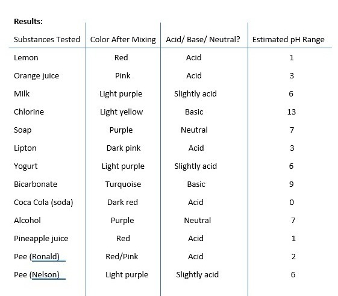
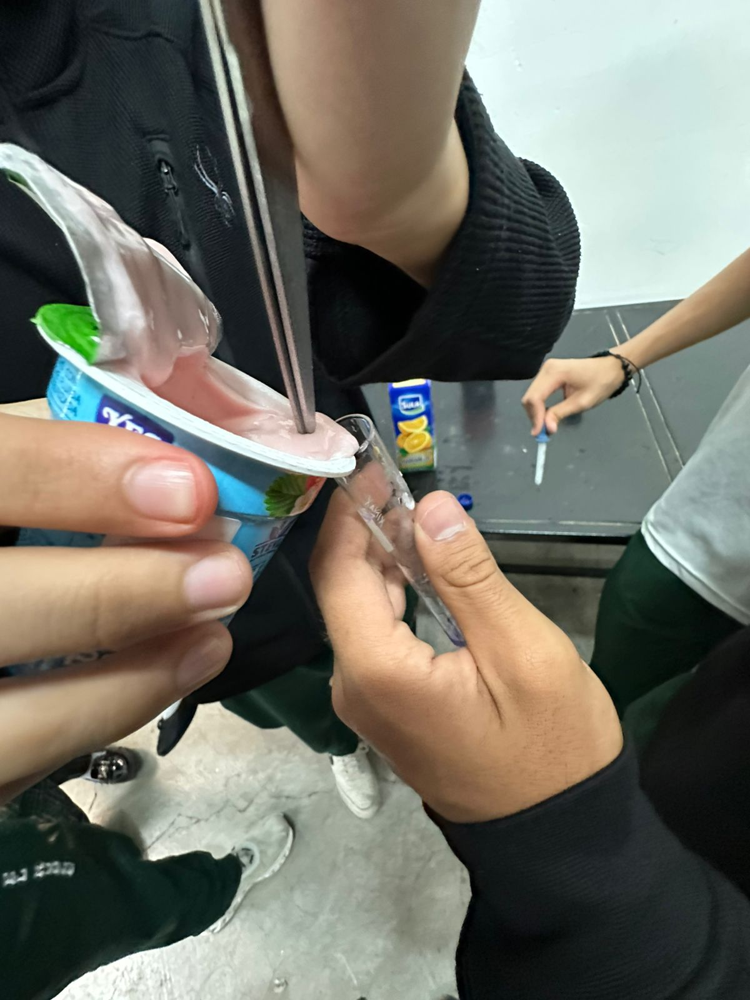

| Start | Introduction and Hypothesis | Materials and Procedure | Results and Conclusions |
|---|

show pH (0-3). But basic substances are
turquoise showing a high pH (9-13). Substances such as soap and alcohol stayed purple,
meaning they were neutral, or basic,just looking at the color it turns.
In this experiment, we clearly saw how red cabbage juice changes color with different
substances, depending on their pH levels. Very acidic things like lemon juice, orange
juice and other things that are slighty acid.
